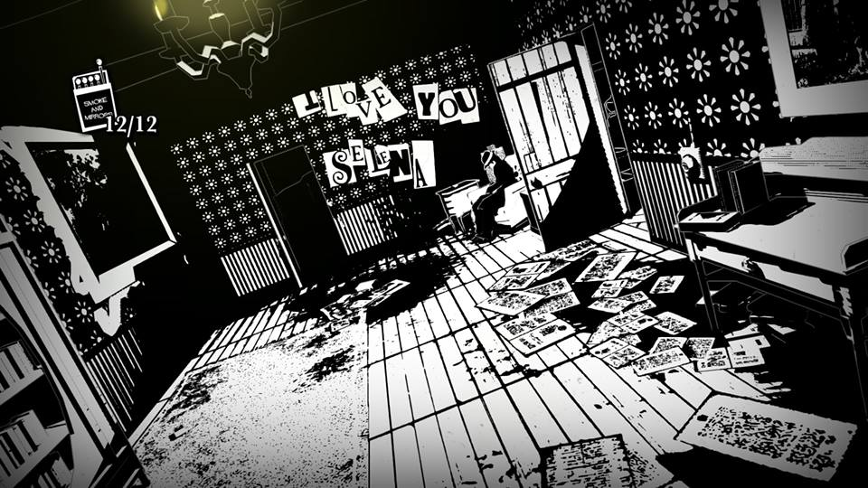

Il fait noir. Pas de façon métaphorique ou atmosphérique — réellement, totalement noir. Votre seule ressource est une pochette d'allumettes, chacune bonne pour soixante secondes de lumière vacillante. Les fantômes qui arpentent le manoir Vesper ne peuvent exister que dans l'obscurité. Allumez une allumette : ils fuient. Laissez-la s'éteindre : ils reviennent.
White Night — développé par le studio lyonnais OSome Studio et sorti en 2015 — est un jeu d'horreur dont la mécanique centrale est littéralement une métaphore. La lumière est connaissance, protection, vérité. L'obscurité est mensonge, danger, refoulement. Et ce que vous allez découvrir dans ce manoir, c'est que la personne qui tient l'allumette est elle-même un mensonge.
I. Le noir et blanc comme langage narratif
White Night est entièrement en noir et blanc — non pas par contrainte technique, mais par conviction esthétique et narrative. Le studio s'est inspiré de l'expressionnisme allemand, d'Hitchcock, du film noir américain des années 30-40. Ce choix n'est pas décoratif. Dans un jeu où la lumière est le seul outil de survie, l'absence de couleur transforme chaque allumette en événement. La flamme ne révèle pas des teintes — elle révèle des formes, des ombres, des détails de journaux, de photos, de lettres.
Ce que le noir et blanc fait narrativement est encore plus intéressant : il efface les nuances superficielles pour ne laisser que les contrastes fondamentaux. Blanc : vérité, innocence présumée, lumière. Noir : mensonge, crime, ombre. Et gris : l'espace ambigu où vivent presque tous les personnages du jeu.
Le studio a également fait le choix d'une caméra fixe à angles hitchcockiens — comme les premiers Resident Evil — ce qui crée une tension permanente entre ce que le joueur voit et ce qui peut exister hors champ. Dans l'obscurité, avec une caméra fixe, le danger est toujours potentiellement là où vous ne regardez pas. C'est une géographie de l'anxiété.
Dans White Night, la lumière n'éloigne pas la peur. Elle la rend visible. Ce qui est dans le noir n'est pas absent — il attend.
II. La famille Vesper — une généalogie de la folie
L'histoire du manoir se reconstitue par fragments : journaux intimes, lettres, coupures de presse, photographies. On apprend ainsi l'histoire de trois personnes dont la souffrance s'est accumulée et transmise sur des décennies.
Henry Vesper — patriarche doux et rêveur, méprisé par sa femme qui le considérait faible et indigne de leur nom. Il a contracté la syphilis, dont les ravages sur le cerveau ont progressivement brouillé sa perception de la réalité. Sa mort a libéré Margaret — et dévasté William.
Margaret Vesper — matriarche froide, obsédée par le prestige familial, aveuglée littéralement vers la fin de sa vie par une dégénérescence héréditaire qui affectait également son père. Elle n'a jamais aimé Henry. Elle a projeté sur William des attentes impossibles. Le jeu la présente comme l'antagoniste principale — c'est son fantôme qui chasse le joueur dans chaque pièce. Mais le jeu est aussi honnête sur ce qu'elle était : une femme que son époque avait formée à l'obsession du rang, elle-même produit d'une famille marquée par la maladie mentale.
William Vesper — fils unique, sensible, musicien, alcoolique. Élevé dans la peur de sa mère et le deuil de son père, il a développé une fascination pour l'occulte et un complexe maternel au sens le plus clinique du terme. Il a tué des femmes qui ressemblaient à Margaret. La presse l'a surnommé « le Loup du Lac Noir ».

Le manoir Vesper dans l'obscurité
III. Le protagoniste est William — et il ne le sait pas
C'est le pivot central du jeu, semé avec une patience exemplaire dès la première heure. Notre protagoniste — un homme sans nom, chapeau fedora, trench-coat, alcoolique, pianiste — arrive au manoir Vesper après avoir évité une femme fantôme sur la route et crashé sa voiture. Il explore, il lit, il découvre l'histoire de la famille Vesper avec une répugnance croissante pour William.
Le problème : chaque détail qu'il découvre sur William correspond exactement à qui il est. Il boit. Il joue du piano. Il décrit Selena — la chanteuse de jazz qu'il cherche à sauver — avec exactement les mêmes mots que William dans ses journaux. Les « notes à soi-même » qu'il trouve dans le manoir sont littéralement ses propres notes — sans qu'il le réalise.
La scène climax du chapitre cinq est dévastatrice : Selena le repousse de terreur et lui crie « Pourquoi tu m'as fait ça ? » — parce qu'elle sait qui il est. Et le joueur, à ce moment, comprend aussi. Le héros du film noir est le tueur. L'homme qui cherche la vérité est la vérité qu'il fuyait.
IV. Selena — la femme fatale qui échappe à son rôle
Le film noir impose à ses femmes un rôle précis : la femme fatale, dangereuse et séduisante, qui mène le héros à sa perte. White Night semble d'abord reproduire cette structure — Selena est une chanteuse de jazz dont le fantôme lumineux guide et protège le joueur dans le manoir. Elle est belle, éthérée, inaccessible.
Mais le jeu déjoue le trope. Selena n'est pas fatale — elle est une victime. Ses lettres à William, collectables dans le manoir, révèlent une femme qui l'aimait sincèrement, qui percevait sa fragilité, qui cherchait à le rejoindre dans sa douleur. Elle n'est pas la cause de sa chute : elle est sa dernière victime. Et son fantôme guide le protagoniste non pas par amour pour lui — mais parce qu'elle cherche sa propre résolution, sa propre sortie de ce cycle.
Une critique acérée du jeu — celle de Kill Screen — note justement que malgré cette subversion, Selena reste définie par son rapport à William même dans la mort : elle n'existe dans le jeu que dans la mesure où elle est vue par lui, aimée par lui, tuée par lui. Sa rédemption passe encore par son bourreau. C'est la limite que le jeu n'arrive pas tout à fait à franchir — et qui mérite d'être nommée.
V. La Grande Dépression comme toile de fond — et comme structure
Le jeu se déroule en 1938, Boston, en pleine sortie de la Grande Dépression. Les coupures de presse collectables mentionnent régulièrement le krach de 1929, les programmes New Deal de Roosevelt, les faillites industrielles. Ce n'est pas du décor.
La famille Vesper est une famille de l'industrie textile — vieille fortune qui a survécu au krach en produisant du tissu bon marché pour les classes défavorisées. Cette ironie est explicite dans le jeu : les Vesper ont prospéré sur la misère des autres, et leur folie interne est présentée en parallèle de la folie économique qui dévore l'Amérique. William — le « Loup du Lac Noir » qui tue des femmes des classes populaires — est aussi lu par certains analystes comme une métaphore du capitalisme qui dévore ce qu'il produit.
Ce sous-texte économique est ce qui distingue White Night d'une simple histoire de maison hantée. Le manoir Vesper n'est pas seulement un espace psychologique — c'est une institution, avec tout ce que le mot implique de pouvoir et de violence normalisée.
White Night est sorti en 2015 et est disponible sur PC, PS4, iOS et Nintendo Switch. C'est un jeu français — développé par OSome Studio, un studio lyonnais — ce qui en fait une curiosité supplémentaire dans un genre dominé par les productions américaines et japonaises.